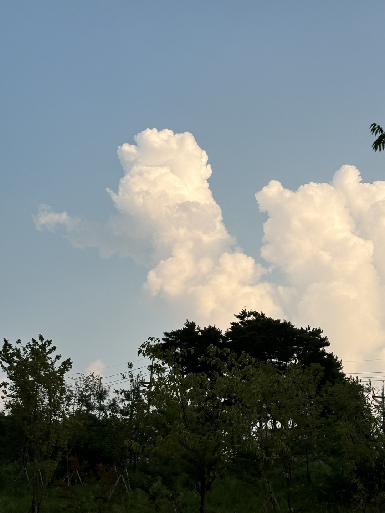
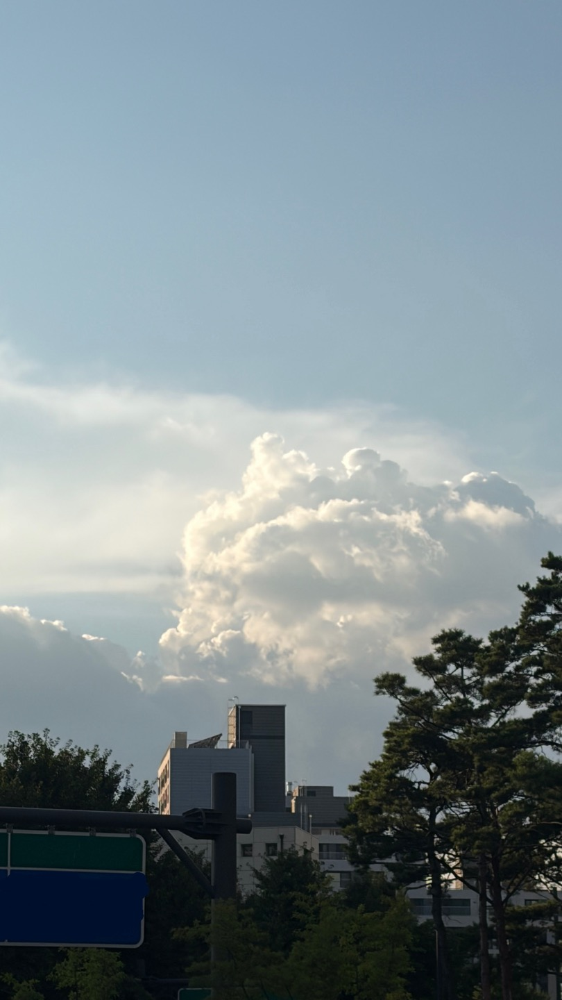
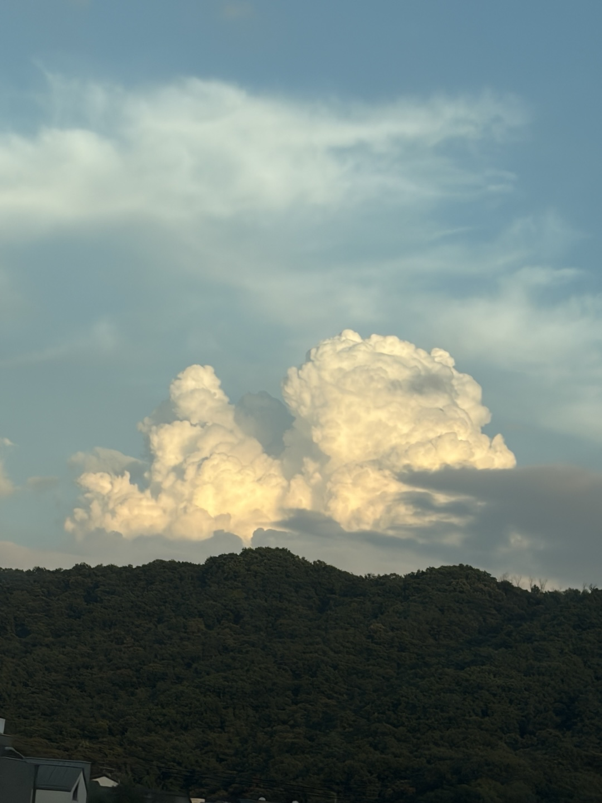
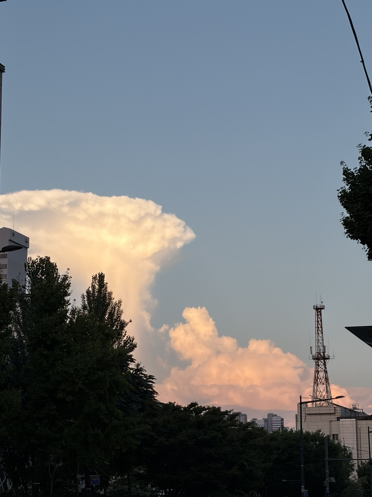

구름 사이로 빛이 남는 순간
어두운 구름 사이에 작게 남아 혼자 빛나는 구름이 좋다.
복잡한 하늘 속에서 숨 쉴 틈이 생겼다.

맑은 날에만 볼 수 있는 하늘이었다.

그날은 신호를 기다리다 고개를 들었고, 구름이 거기 있었다.

노을을 보는 그 잠깐이 나만의 시간이었다.
오늘도 수고했다고 말해 주는 것 같았다.

해가 지는 짧은 시간 동안 하늘은 몇 번이나 색을 바꿨다.
푸른 하늘의 시원함이 느껴져서